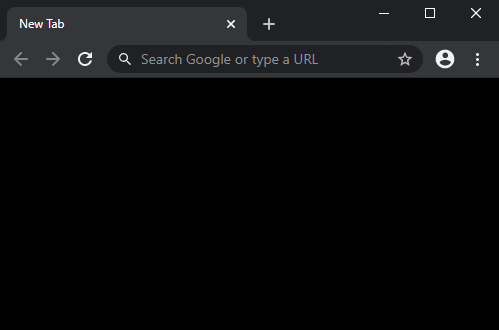
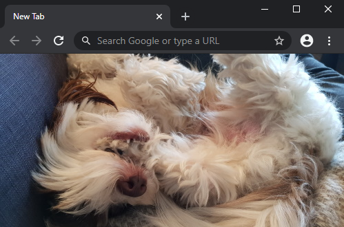

Advanced Broadcast channel API
With RxJS and Angular
The best way to send messages between browser tabs
What you will learn
The entiery API, in 4 lines of code
Transforming a solution into a multi tab application

The problem
Especially at work
One tab, one solution
Fill
Fill
Fill
Fill
Case management systems 📑
List of cases
Case details
Case history
Case actions
Case map
All in one tab
Running out of screen real-estate
Splitting screen into pages is slower
Want to view it all?
The solution?
The BroadcastChannel API
const channel = new BroadcastChannel('test_channel');
channel.onmessage = function (message) { console.log(message.data); }
channel.postMessage('This is a test message');
channel.close();
That's it!
Lets see it in action
Time for code
Core concepts
Multicasting

Master and slaves

Same origin only
| example.com | ✔️ |
| example.com/subroute | ✔️ |
| blog.example.com | ❌ |
| example.com:1337 | ❌ |
| vg.com | ❌ |
Works on localhost
Same scheme, host and port
Same computer🖥️ and browser
BroadcastChannel has low priority
Delayed when the tab under heavy load🔥
Can't send and receive the same message
No need to filter out own message
Need to remember while debugging
Don't know who sent the message
Don't know who received message
Need to handle it yourself
Browser support
| ✔️ |


|
| ❌ |

|